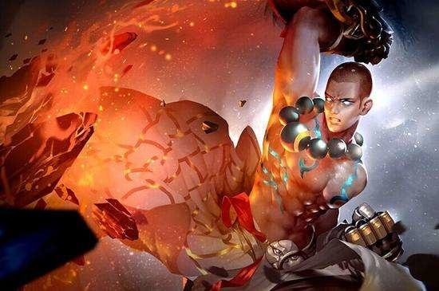

替换成
达摩是为降伏邪恶而生的。身为王者之子，他苦修经书和拳法，立誓拯救身边不幸的人们，并对自己的使命坚信不疑。但突如其来的叛变席卷王国。父王被毒死，人们哀嚎着被杀害，他也陷入绝境。叛变的头目，也是他的兄弟扼住了无辜孤儿的喉咙，要他交出金印。达摩愤怒了。拳法不再为自己所控制，愤怒将皇宫夷为平地。叛军，连同人质小孩一同粉身碎骨。不明真相的人们怪罪他造成惨剧，唾弃他，驱赶他。他陷入深深的忏悔，开始自我放逐的流浪。最终，倒在路边奄奄一息时，大唐的年轻僧人将他救起。僧人看破他的心魔，告诉他不过是因懦弱逃避。而僧人自己预知大唐将被黑夜笼罩时，却义无反顾踏上旅途。达摩握紧拳头。他本当肩挑凡世，拳握初心。他在迷惘中忘记了走不通的路，应该用拳头来打开。告别僧侣，他毅然迈向相反的方向：大唐。最深的黑夜，往往是光明所在。那里一定有他要寻找的东西。“贫僧自西天而来，要去往东土大唐取经之地。
